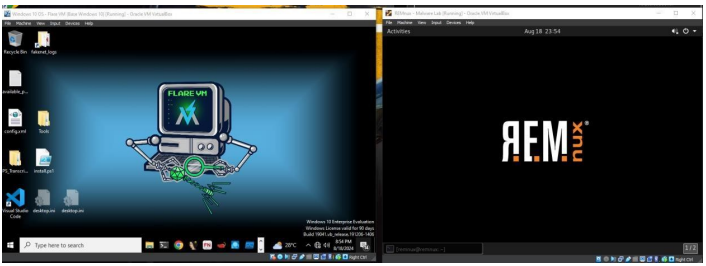
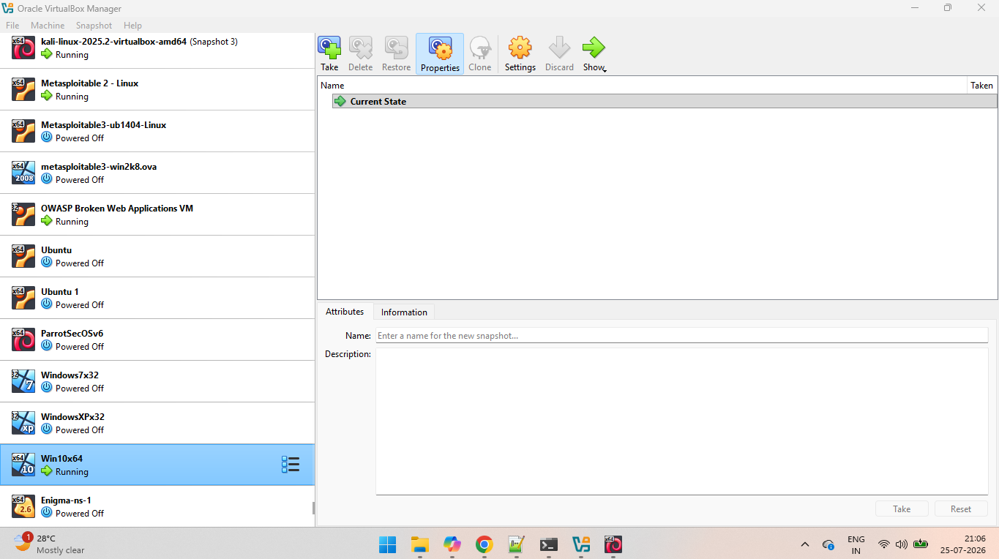
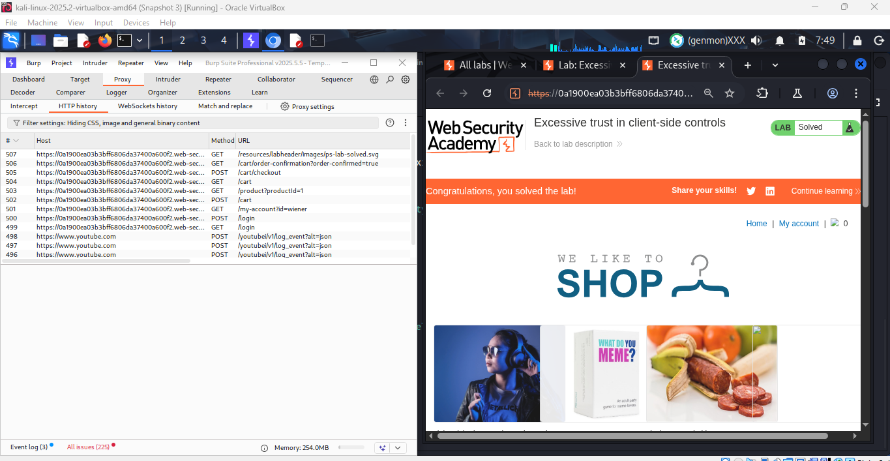

Web Application Security
SQL Injection
Cross-Site Scripting (XSS)
Insecure Direct Object Reference (IDOR)
Server-Side Request Forgery (SSRF)
XML External Entity (XXE)
Authentication Testing
Building practical cybersecurity expertise through hands-on penetration testing, vulnerability assessment, security research, automation, and real-world labs.
My interest in cybersecurity comes from understanding how applications work beneath the surface and identifying security weaknesses before they become real risks. Through hands-on labs, personal projects, and continuous research, I have developed practical experience in web application security, network penetration testing, Active Directory security, malware analysis, and Python automation.
I believe cybersecurity is best learned through practice. Every project, lab, and security research documented in this portfolio reflects my commitment to continuous learning, problem solving, and developing practical offensive security skills.
Hands-on cybersecurity knowledge developed through penetration testing labs, security research, automation projects, and continuous learning.
A collection of hands-on cybersecurity projects focused on penetration testing, malware analysis, lab development, security automation, and practical offensive security skills.
Designed and documented a secure malware analysis environment using VirtualBox, Windows 10, FLARE VM, REMnux, Host-Only Networking, and INetSim to safely perform static and dynamic malware analysis in a fully isolated environment.

Built an isolated penetration testing laboratory using VirtualBox with multiple operating systems and intentionally vulnerable machines, including Kali Linux, Metasploitable, OWASP Broken Web Applications, Windows 10, Windows 7, Windows XP, Ubuntu, and Parrot Security OS. The environment is used to practice reconnaissance, web application testing, network enumeration, exploitation, and vulnerability validation.

Developed Python automation scripts to streamline business logic testing by automating authentication workflows, session management, CSRF token extraction, and HTTP request manipulation while solving PortSwigger Web Security Academy labs. These automation scripts reduce repetitive testing, improve efficiency, and simulate realistic attack scenarios during security assessments.

A growing collection of hands-on security labs and technical write-ups documenting vulnerability research, attack techniques, and practical cybersecurity learning.
Professional certifications and continuous learning demonstrating my commitment to cybersecurity and offensive security.
Completed 292+ hands-on rooms, earned 41 badges, achieved a Top 1% global rank, and completed multiple guided learning paths covering Web Security, Active Directory, Privilege Escalation, and Offensive Security.
Continuously expanding my cybersecurity expertise by preparing for industry-recognized certifications and strengthening practical skills in penetration testing, Active Directory, application security, and offensive security methodologies.
I'm always interested in cybersecurity discussions, collaboration opportunities, and challenging security roles.
Hyderabad, Telangana, India